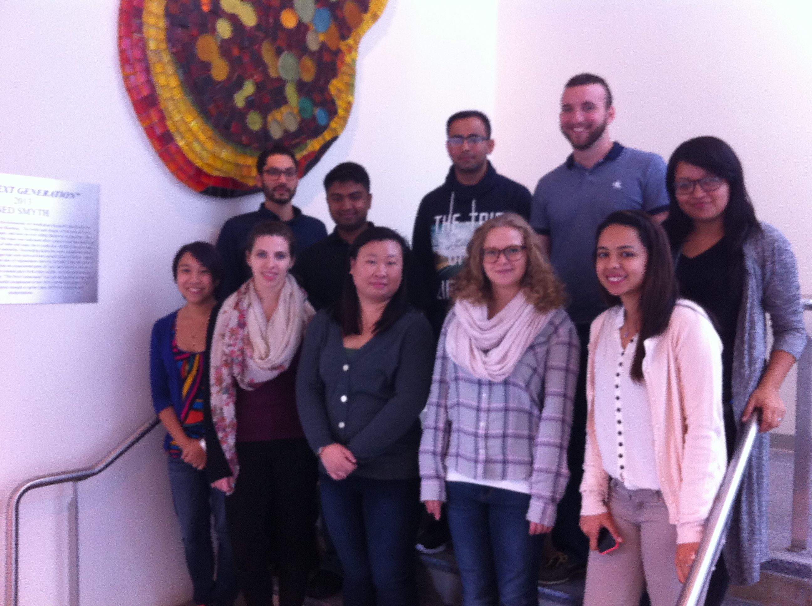
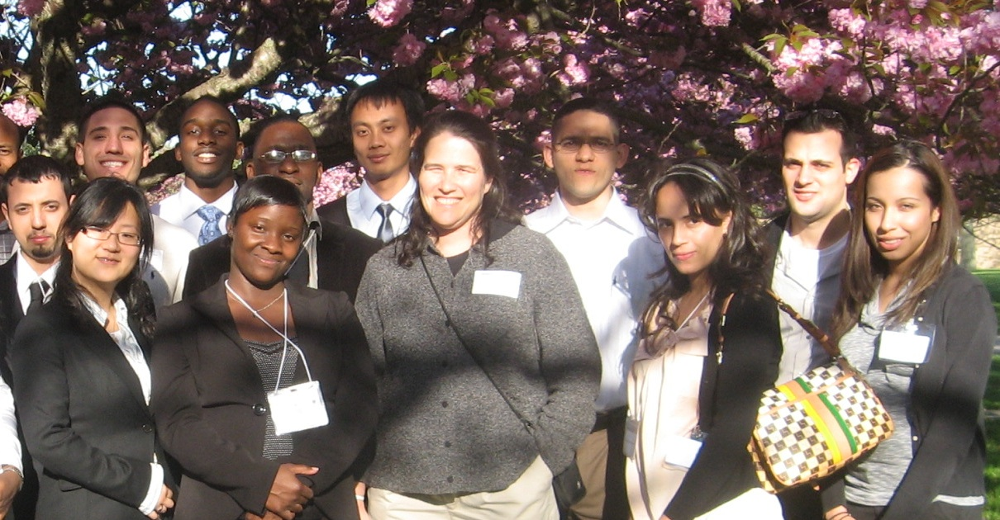
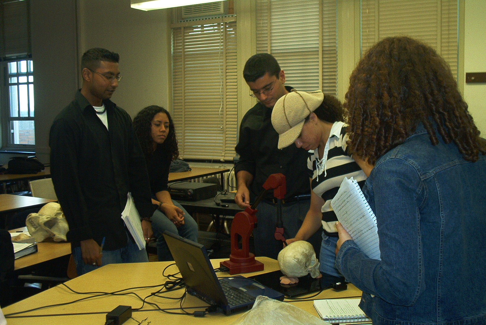
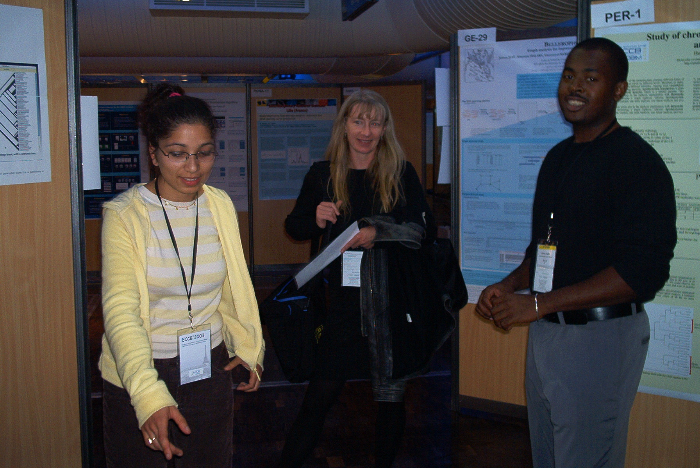
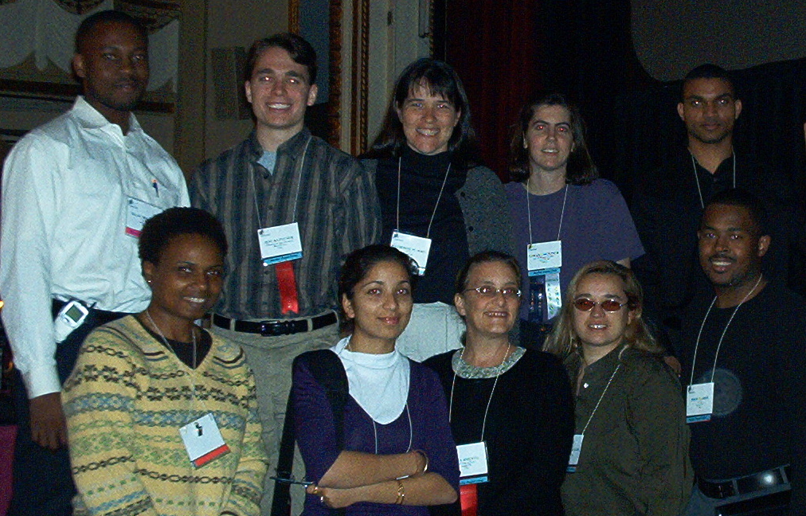

Student Research
|  |
| REU, 2015-2016 |
|  |
| Brookhaven, 2010 |
 |
| Alan, Jinnie, & Kaitlin, 2009 |
|  |
| UBM, 2004 |
|  |
| ECCB, 2003 |
|  |
| InfoVis, 2002 |
I regularly mentor both undergraduate and graduate students (and occasionally high school students) for research projects. See my research page for recent research grants and publications.
Prospective Doctoral Students
Admissions to the doctoral program are handled centrally by the Graduate Center, and you should contact them directly. While I would be happy to discuss the merits of the programs there, the admissions committee makes all decisions.Prospective Undergraduate and Masters Students
Almost all of my research is collaborative and is approachable by students with strong analytical skills. The projects require the ability to program well, strong proof skills, or a strong background in phylogenetics. In addition, students work in teams of two or three and must have good written and oral communication skills. Students with the following are most likely to succeed:
- A GPA of 3.5 or higher,
- At least a grade of B in all Biology, Computer Science, English, and Mathmatics courses taken,
- Completion of third term programming (know standard graph
algorithms well),
or completion of a proof-based mathematics course (analysis or algebra),
or completion of a junior-level phylogenetics or systematics course.
- Spend at least 5 hours a week working on the project,
- Attend weekly meetings with your teammates and with me,
- Write up regular progress reports (including well-documented code and/or proofs),
- Prepare and present your work at poster sessions (usually once a semester),
- Sharing your programs and notes with others, and
- Be involved in writing and editing final work for publication.